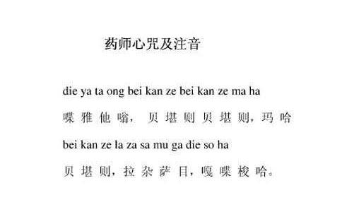

一、来源与功效 汉地
1、闻说药师名号即得灭罪往生。
2、修药师法及持药师咒，可除病离苦。
因此药师法与咒在汉地、日、韩、西藏等地相当盛行。
一般通行于中、日、韩地区的汉译《药师经》，是玄奘译于650年的《药师琉璃光如来本愿功德经》。该经原无咒语，但通行的所谓玄奘本可见有Me述药师咒的诵 出因缘、咒文、持咒法及功效的经文；这应该是后
「…… 彼药师琉璃光如来得菩提时，…… 说此咒已，大地震动，放大光明，一切众生，病苦皆除，受安隐乐。…… 应当一心，为彼病人，常清净澡漱，或食、或药、或无虫水，咒一百八遍，与彼服食，所有病苦，悉皆消灭。若有所求，至心念诵，皆得如是；无病延年；命终之 后，生彼世界，…… 如是便蒙诸佛护念，所求愿满，乃至菩提。」
二、持法由上文可知此咒的持法为：对食物、药、或水持咒一百零八遍，再让病人服食。当然，「常清净澡漱」的基本医疗处置，也是必要条件之一。其功效如上经文所述为：除病离苦，所求皆得。
依文字的有无意义，咒语可分为：1.全有文字意义、2.全无文字意义、3.混合型等三种。药师咒每个字皆有清楚意涵，我觉得了解咒语意义有助于学习与记忆，因此虽知咒语不译属所谓五不翻原则，但仍解释其意。
药师咒有大咒与小咒之分，或称长咒与短咒，又名根本咒与心咒。兹将药师根本咒分成下列五部份，并逐句解释其意。
（1）归敬呼请文
（2）即说咒曰
（3）咒语主文
（4）
（5）结语
（1）归敬呼请文：
在礼敬
简易罗马拼音：
1.namo bagavate baisajya-guru-vaidurya-praba-rajaya tatagataya arhate samyaksambudaya 2.tadyata
传统汉字音译：
1.南谟 薄伽伐帝 鞞杀社 窭噜 薜琉璃 b?漹C喝啰阇也 怛他揭多也 阿啰喝帝三藐三勃陀耶 2.怛侄他
简易汉字音译：
1.那摩 拔轧哇贴 百沙加 姑鲁 外丢里牙 普拉巴拉夹牙 塌塌轧塌牙 阿尔哈贴 三藐客三菩达牙 2.塌地牙踏
咒语汉语翻译：
1.礼敬世尊．药师琉璃光王如来．应供．正等觉！2.即说咒曰：
南谟（namo）是南无，礼敬、归命之意；薄伽伐帝（bhagavate）是世尊；合起来是：礼敬世尊。
鞞杀社（bhaisajye）是药；窭噜（guru）是师；薜琉璃（vaidurya）常简称为琉璃；b?漹C(prabha)是光；喝啰阇也 （rajaya）来自raja，是王；ya是梵文与格字尾，表示礼敬的对象，合起来是：药师琉璃光王。
怛他揭多也（tathagataya）来自tathagata，是如来；阿啰喝帝（arhate）来自arhat，为应供或阿
（2）即说咒曰：
「怛侄他（tadyatha）」是咒语的重要分水岭，在型式完整的咒语中，此句之前为归敬呼请文，之后是咒语的中心内容；意思是即说咒曰，英文常译为It runs like this。
简易罗马拼音：3.om baisajye baisajye 4.baisajya samudgate 5.svaha
传统汉字音译：3.唵 鞞杀逝 鞞杀逝 4.鞞杀社 三没揭帝 5.莎婆诃
简易汉字音译：3.唵 百沙杰 百沙杰 4.百沙加 三木的轧贴 5.刷哈
咒语汉语翻译：3.唵！药！药！ 4.药生起来！ 5.刷哈！
（3）咒语主文：
唵（om）是咒语中心内容常见的起始句。鞞杀逝（bhaisajye，百沙杰）来自bhaisajya，药之意。咒语用字精简，往往只是几个单字，几乎不用完整的句子。
（4）祈愿祝祷文：
在咒语主文及结语间，常会有一段祈求本咒成就的祈愿祝祷文。本咒此段可说是「祈求生起能解除众生病痛的药」之意。
鞞杀社（bhaisajya）是药，三没揭帝（samudgate）来自samudgata，出生、出现、成就之意；英文为risen up, come forth, appeared, begun等意。
梵 文属印欧语系，用英文比用中文易解读。三没揭帝（samudgate）的字源是sam+ud+√gaj （gate）。sam的英文是together；ud是up；gaj是go之意，而梵文gate为英文的gone，因此samudgate的英文为 gone up together或risen up together之意。细心的读者也许会想起
（5）结语：
莎婆诃（svaha）是咒语最常见的结尾语。有吉祥、成就之意。
（1）汉传心咒
药师咒有大咒、小咒之分；大咒就是上文所说的咒语全文。小咒即心咒，其内容在汉、藏、日各有不同
（2）藏传心咒
藏传的〈药师小咒〉类似汉传的用法，但咒文较长，且依传承尚有长短之分，长的为： tadyatha om bhaisajye bhaisajye maha bhaisajye bhaisajye raja samudgate svaha，意为：唵！药！药！大药！药王！生起来！刷哈！可见咒文有四次的bhaisajye。短的则少了一次，即少了raja之前的 bhaisajye，而只有三次，亦即将「大药、药王」并称为「大药王」。流通的音乐带以三次的较常见。
通行藏传发音与梵文念法不同，其心咒念成deyata om bekanje bekanje maha bekanje raja samudgate soha。不同之处在deyata, bekanje与soha。藏传何以如是发音的理由，我留在下几期的藏传阿弥陀小咒一文中再谈。
（3）日传心咒
小咒的另一种说法是日本东密、台密的习惯用法，他们的〈药师小咒〉是根据唐．阿地瞿多所译《陀罗尼集经》卷二，或金刚智所译《药师如来观行仪轨法》等所记 之〈药师琉璃光佛印咒〉。咒文为：「唵！呼嚧，呼嚧，战驮利，摩橙祇，莎诃！om huru huru candali matangi svaha」。另据田久保周誉的研究，小咒还有：「唵 战驮 祇哩 娑婆呵！om canda-giri svaha」，它的出处是《大正藏》924A、B的《药师如来念诵仪轨》。
太虚大师所说的「拔除一切业障」，让人想起前几期介绍过的，俗名为〈
知名佛教学者蓝吉富教授曾在拙著《往生咒研究》序文中指出：「相对于阿弥陀佛西方净土世界的来生效益，东方药师琉璃光净土较强调现世效益。我也觉得多数众 生皆希望现世得安乐，而较不寄望虚无飘渺的来世。」由此不难了解何以药师法与药师咒盛行于汉、藏、韩、日等地。随着高龄化社会的形成，与人类破坏环境所造 成的大自然反扑，相信药师咒在将来会更盛行。